We evaluate Thea on real robots in real-world environments. The experiments explore three questions. The first is how the full harness compares with alternative execution architectures as task complexity increases. The second is how reliably the evaluator, on which closed-loop execution depends, judges the state of an ongoing task. The third is what capabilities emerge from the composition of tools in complete deployments across different embodiments.
Our experiments span three robots with distinct embodiments. The main quantitative experiments run on the Astribot S1, a wheeled dual-arm humanoid that combines an actuated head and torso, an omnidirectional mobile base, and two gripper end effectors, 25 degrees of freedom in total. We additionally explore Thea on AgileX Cobot Magic, which pairs two arms with a mobile base, and on Unitree G1, which carries BrainCo Revo 2 dexterous hands with six degrees of freedom per hand. These deployments test whether the same harness can compose capabilities exposed by different physical interfaces.
| Level | Task | Task description |
|---|---|---|
| L1 | Short-horizon manipulation | Pick up one tabletop object and place it into a basket. |
| L2 | Long-horizon manipulation | Pick up all tabletop objects and place them into a basket. |
| L3 | Navigation and manipulation | Navigate to one table, retrieve the instructed object, and deliver it to a target table. |
To evaluate Thea and the baselines across tasks of increasing difficulty, we organize the experiments into three levels, L1–L3, as summarized in Table 3. L1 is a simple pick-and-place task that isolates a single manipulation cycle on a fixed tabletop. L2 preserves the fixed-table setting but extends the task horizon. The agent must repeatedly locate, pick, and place every object on the table into a basket while tracking progress across multiple manipulation cycles. L3 is the most challenging task and couples navigation with manipulation across two workspaces, requiring the agent to alternate between the two as it travels to the source, identifies and retrieves the instructed object, navigates to the destination, and completes the delivery. Across tasks, we vary object categories and placements. For each method, we conduct 20 independent trials on L1 and L2 and 15 independent trials on L3.
[39]: Zhao et al. (2023), Learning Fine-Grained Bimanual Manipulation with Low-Cost Hardware. [40]: Wu et al. (2026), From Foundation to Application: Improving VLA Models in Practice. [10]: Black et al. (2025), π0.5: A Vision-Language-Action Model with Open-World Generalization. [41]: Ahn et al. (2022), Do As I Can, Not As I Say: Grounding Language in Robotic Affordances. [32]: Fu et al. (2026), CaP-X: A framework for benchmarking and improving coding agents for robot manipulation. [28]: Zhu et al. (2026), SysNav: Multi-Level Systematic Cooperation Enables Real-World, Cross-Embodiment Object Navigation.
We compare Thea with the following systems:
end-to-end policies [10, 39, 40], a Coding-as-Policy baseline, and a
hierarchical planning method based on SayCan [41]. The
Coding-as-Policy baseline revises its robot-control program over multiple
turns using execution traces and structured text describing the initial
scene, subsequent visual changes, and task completion. This follows the
CaP-Bench M3 setting in CaP-X [32]. We use GPT-5.5 with reasoning
effort set to high as the decision model for
Thea, CaP-X, and SayCan. For perception,
Thea builds on the Astribot S1 SDK and
SysNav [28]. Each end-to-end policy is trained or fine-tuned on 200
collected demonstrations per task. The Coding-as-Policy and hierarchical
planning methods use the same tools and underlying implementations as
Thea (Table 4, Appendix A). For the orchestration
baselines [32, 41], this setup controls for the underlying robot
capabilities and isolates how each architecture selects and composes tools,
and how it recovers when they fail. Two of the end-to-end baselines, ACT and
π0.5, are the same policies that back
Thea's manipulation tools (Table 4, Appendix A). The
differences reported below therefore reflect how complete each
architecture's orchestration is, not how capable the underlying policies
are.
Figure 8 reports the task success rates of ACT [39], LingBot-VLA-V2 [40], π0.5[10], CaP-X [32], SayCan [41], and Thea across L1–L3. Beyond absolute performance, the comparison shows how each architecture scales as task horizon and compositional complexity grow. A trial counts as successful only if every instruction-specified object reaches its target location and the robot completes all required navigation and manipulation stages; outcomes are judged by human annotators from recorded trajectories, independently of the online evaluator.
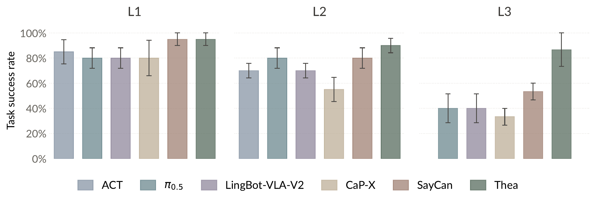
Thea achieves the highest success rate at all three
levels. On L1 the gap among methods is small. On L2,
Thea evaluates each grasp and retries the failed
ones instead of carrying an invalid sequence forward. On L3, the agent calls
navigate_to and then move_base to bring the robot
to a pose better suited to the next manipulation, and adjusts the pose again
when a manipulation fails. For the end-to-end policies (ACT, LingBot-VLA-V2,
π0.5), a failure in the middle of a task goes
undetected, and the run does not recover. CaP-X generates and revises
programs across multiple turns; SayCan selects the next skill with no
verdict on the last. The gap that widens from L1 to L3 follows the
reliability arithmetic of §2, where per-step
failures compound with task length. It also reflects key properties of the
harness. The model selects and composes tools as the task requires, and the
evaluator closes the loop, making outcomes observable and failures
recoverable.
The recovery behind the results above rests on the evaluator, as the analysis of §2 suggests. We therefore measure how reliably the evaluator judges the state of an ongoing physical task. The test set consists of 90 trajectory checkpoints collected from Astribot S1, AgileX Cobot Magic, and Unitree G1, sampled in equal numbers after successful completion, mid-execution, and after unrecovered failures. Two human annotators labeled each checkpoint independently from the complete trajectory, resolving disagreements by replay and discussion. We use Qwen3.7-Plus [42] as the evaluator model throughout our experiments. At test time the evaluator sees only its evaluation prompt, including the per-tool post-condition (the expected world state after the call), and the synchronized camera observations.
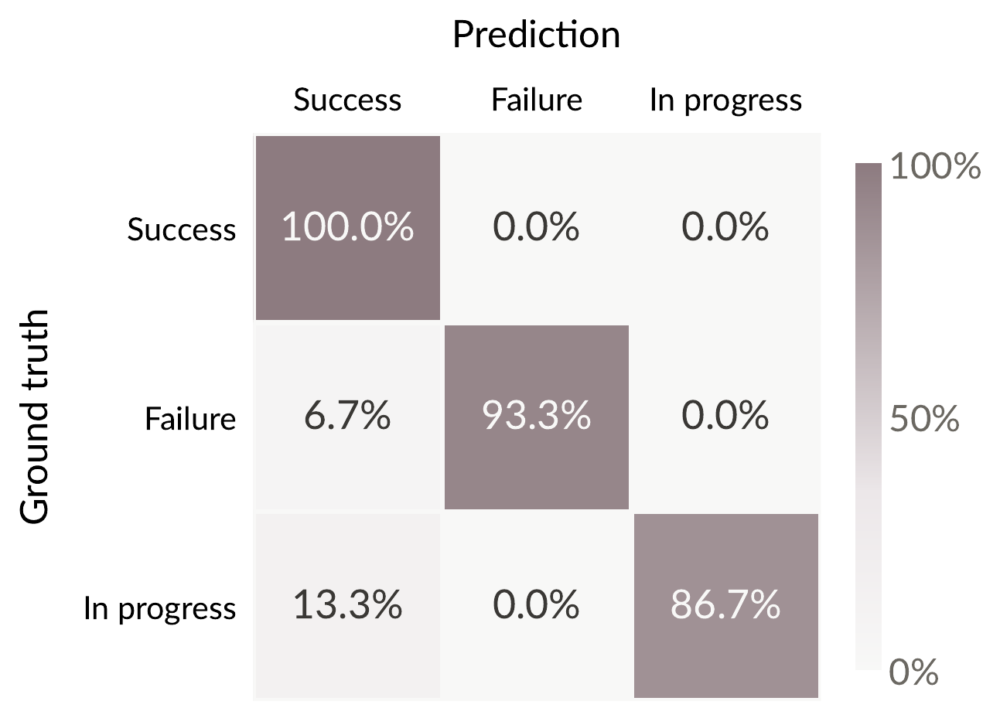
Figure 9 reports the classification performance for each state separately, with an average accuracy of 93.3%. The remaining errors all run in one direction: 6.7% of failed and 13.3% of in-progress checkpoints are judged successful, while no successful checkpoint is misjudged. These errors are the harmful kind, because a false success either forfeits a needed retry or cuts an action short. Reducing this error mode is an important next step. Substituting the measured accuracy (α = 0.93)1, per-step success p = 0.8, and up to k = 5 retries into the formulation of §2, a five-step task completes with probability 0.33 in open loop and 0.91 under the harness, broadly consistent with the trend in Figure 8.
This subsection moves from the fixed tasks above to longer, open-ended tasks in more complex, realistic settings. Thea runs with the full harness, every tool and component available, and we observe what the agent as a whole composes out of them. The demonstrations below sample the capabilities that emerge, and Appendix C provides the execution logs of the demos.
Long-horizon task composition. Across these
deployments, Thea carries user requests through to
completion over extended sequences of physical interaction. The difficulty
concentrates where navigation and manipulation alternate, because each
manipulation depends on where the previous move left the robot.
Thea composes the alternation from its tools
(Figure 10a): it
reads the target's position from the scene graph, approaches with
navigate_to, refines the base pose with move_base
within the measured clearances, and hands each manipulation's outcome to the
evaluator, whose verdict decides whether to adjust and retry or move on.
Figure 10 shows representative trajectories, each composed at run time from
the same general tools; none follows a script prepared for the task.
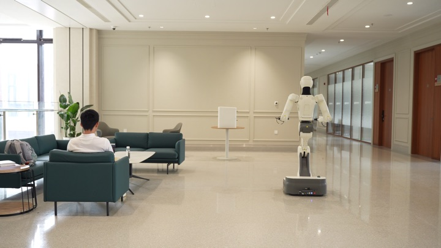
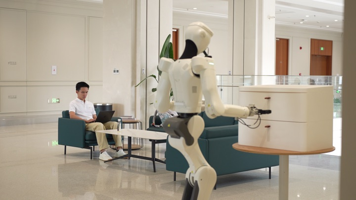
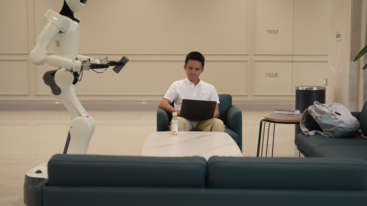
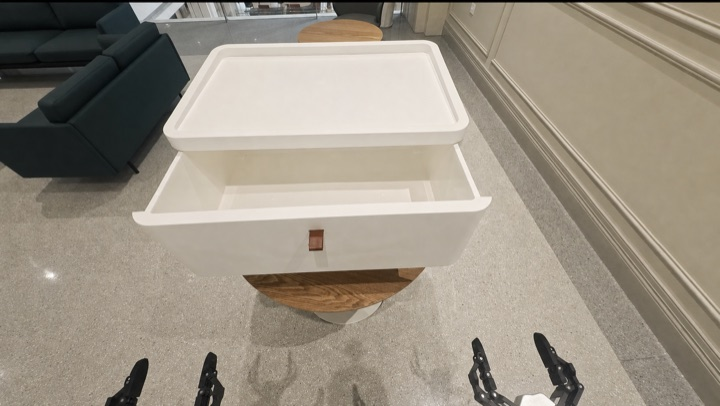
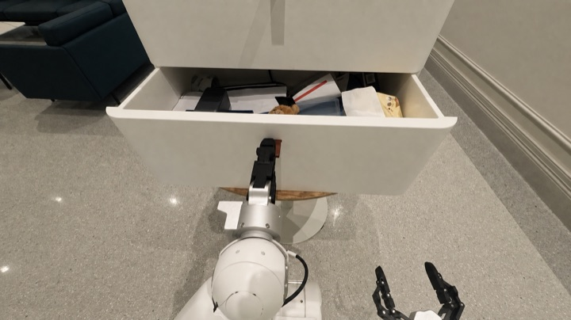
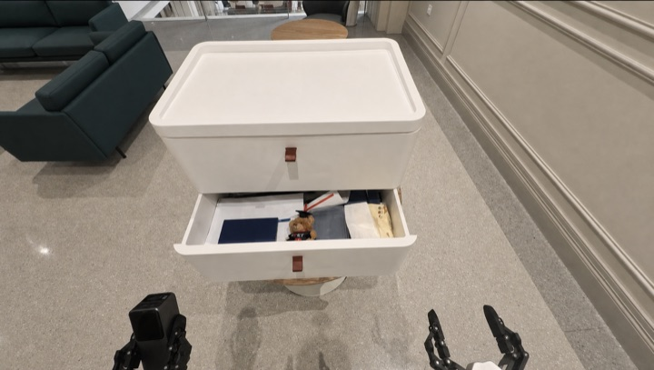
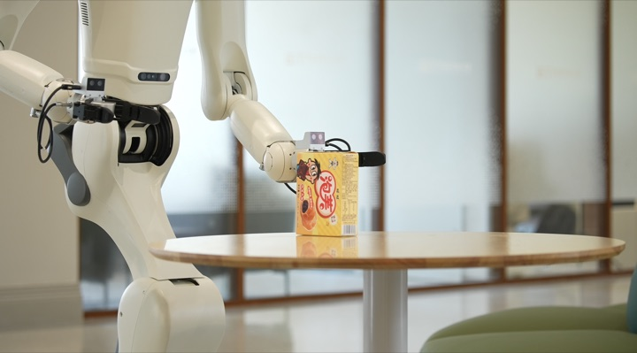
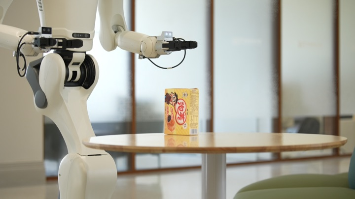
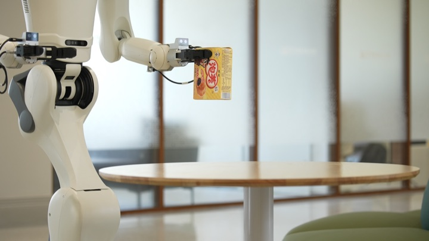
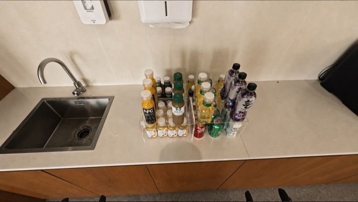
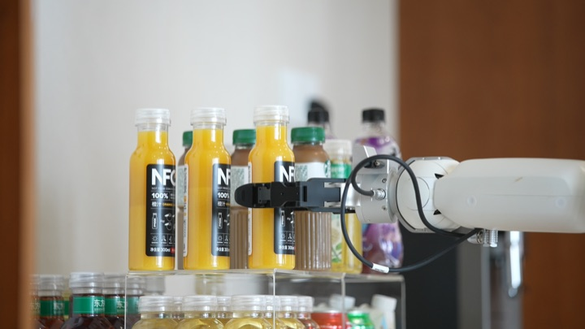
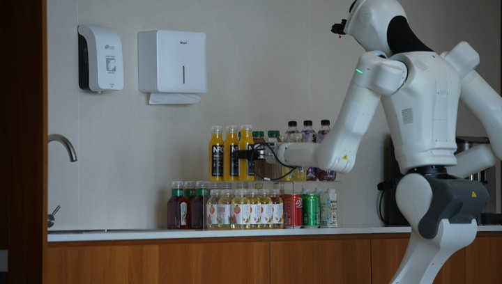
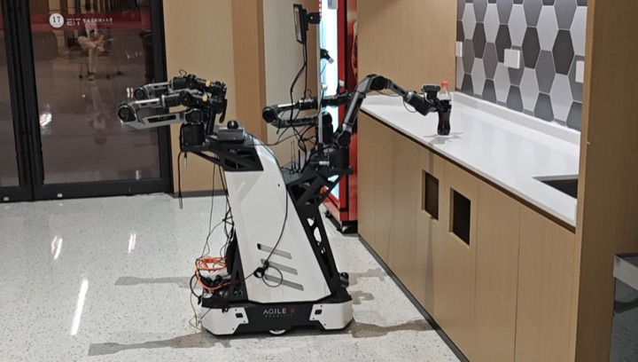
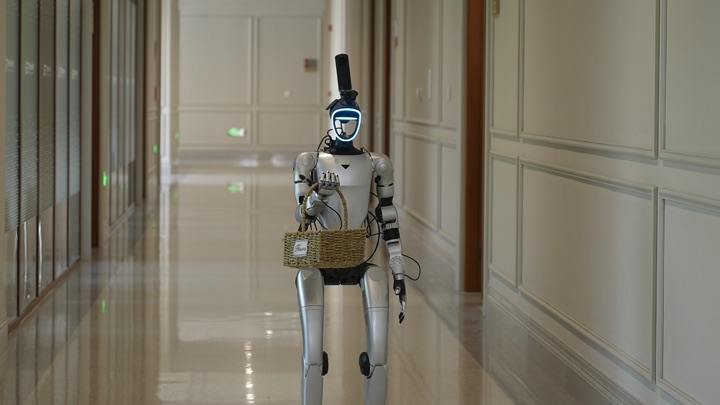
Active perception. Active perception takes two
forms. When a requested object appears nowhere in the scene graph,
Thea explores the environment. It navigates to a
cabinet, opens and inspects its drawers in sequence (Figure 10b), and
writes the previously occluded contents into the graph. When the evidence lies outside
the current view, Thea adjusts the view instead,
calling tilt_head to bring the relevant region into the camera.
The two operate at different scales, moving the body and moving the camera,
but follow the same logic: perception is an action the model chooses, and
the new perception informs the next decision.
Failure recovery. Physical execution does not always satisfy the intended post-condition on the first attempt. When it does not, the evaluator returns the failure with a reason, and Thea decides the next call from that reason and the surrounding evidence (Figure 10c), perhaps adjusting the base pose before retrying, or switching to a tool backed by a different policy. When a retry succeeds, the consolidation at task end writes the recovery into that tool's experience.
User interaction. Thea
keeps the user reachable throughout the task. A request may prove vague, a
choice may hinge on the user's preference, or progress may be worth
surfacing; query_user and notify_user serve these
moments, and the model calls them when the need arises. In the beverage
scene (Figure 10d), the user asks for a bottle of water and the scene graph holds none;
rather than grasping a substitute of its own choosing,
Thea asks the user which of the drinks it does see
to bring, and retrieves the one the user selects.
Cross-embodiment portability. The same harness runs on all three embodiments, Astribot S1, AgileX Cobot Magic, and Unitree G1 (Figure 10e). Nothing in the loop refers to a particular body; what is body-specific enters through the Embodiment Profile and the tool implementations behind the registry. Moving to a new robot therefore means writing its profile and its tools, while the loop above them, interpreting requests, selecting tools, weighing evaluator verdicts, carries over unchanged.